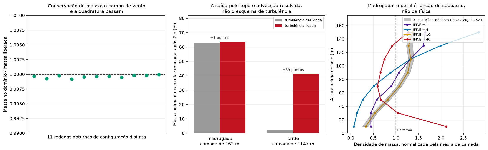

Dados e métodos
Esta seção reúne os dados observacionais, as formulações e as hipóteses numéricas empregadas na análise da dispersão atmosférica do estireno liberado pela Videolar-Innova entre 15 e 19 de julho de 2026. Os valores adotados para todas as constantes estão consolidados na Tabela 1, ao final. As páginas seguintes reportam os resultados obtidos com este arranjo; aqui descreve-se apenas o arranjo em si e o que ele é capaz de sustentar.
Área de estudo e evento
A fonte é a Unidade IV da Videolar-Innova, no Distrito Industrial I, zona sul de Manaus (AM), na coordenada −3,1210°, −59,9560° (WGS84). O ponto corresponde ao endereço da planta; a indefinição posicional interna ao complexo, de algumas centenas de metros, é pequena frente às escalas quilométricas tratadas na análise, mas não é desprezível no campo próximo, e isso está registrado entre as limitações.
As distâncias planares entre a fonte e as referências urbanas adotadas ao longo do texto, calculadas em projeção métrica local (UTM 20S, SIRGAS 2000), são:
| Referência | Distância da fonte | Direção aproximada |
|---|---|---|
| Aeródromo de Ponta Pelada (SBMN) | 4,4 km | sudoeste |
| Teatro Amazonas (Centro) | 7,6 km | oeste |
| Aeroporto Internacional Eduardo Gomes (SBEG) | 13,9 km | noroeste |
A janela temporal analisada vai de 15 a 19 de julho de 2026, cobrindo desde o início da liberação, no fim da tarde de 15/07, até o encerramento das operações de resfriamento, em 19/07. Todo horário local citado neste trabalho está em UTC−4, fuso do Amazonas, que não observa horário de verão; horários expressos em Z são UTC.
Dados observacionais
O vento de superfície foi reconstruído a partir de 243 observações METAR horárias das estações SBEG (Eduardo Gomes) e SBMN (Ponta Pelada), para a janela do evento, obtidas do arquivo ASOS mantido pela Iowa State University. De cada registro foram extraídos direção do vento, velocidade, temperatura do ar e o primeiro grupo de cobertura de céu. As velocidades, reportadas em nós, foram convertidas para metros por segundo; a temperatura ambiente noturna usada na formulação de ascensão de pluma é a média das horas entre 00 e 06 local do período, 298,9 K.
A estação automática A101 do INMET, em Manaus, não retornou dados no período consultado. A base observacional deste trabalho é, portanto, integralmente aeronáutica, com as consequências que isso traz: dois pontos de medida, ambos em aeródromos, nenhum deles no Distrito Industrial nem nos bairros que relataram odor.
A classe de estabilidade de Pasquill-Gifford foi atribuída hora a hora a partir da velocidade do vento, da hora local e da cobertura de céu, pela tabela clássica consolidada em Turner (1970). Quando o grupo de cobertura de céu está ausente, o registro é tratado como céu claro, o que empurra a hora noturna para a classe mais estável do par. A sensibilidade dessa convenção é quantificada na página de meteorologia. Cabe registrar aqui um detalhe da parametrização que limita o alcance da distinção: na tabela urbana de Briggs, as classes E e F compartilham os mesmos coeficientes, de modo que o modelo de dispersão não separa uma da outra.
Modelo de dispersão
A concentração é calculada por uma equação gaussiana de fonte pontual contínua com reflexão no solo, na forma clássica
em que é a taxa de emissão, a velocidade do vento de transporte, a altura efetiva de emissão, a distância a favor do vento, a distância transversal e a altura acima do solo. Os desvios e crescem com e dependem da classe de estabilidade.
À forma clássica somam-se três termos, escritos de modo que a expressão colapse exatamente na equação acima quando cada um deles é desativado:
Coeficientes de dispersão
Adotou-se a parametrização urbana de Briggs, derivada dos experimentos de St. Louis (McElroy & Pooler, 1968) e tabulada por Briggs (1973), na forma
com em metros e coeficientes próprios de cada classe. As curvas são ajustes experimentais declarados válidos para 100 m a 10 km. O alvo do problema inverso, 15 km, e o domínio do campo de concentração, 40 km, ficam além desse intervalo: a aplicação é uma extrapolação assumida, cuja consequência é discutida adiante.
Os coeficientes são reproduzidos aqui para que o trabalho seja refazível a partir do texto, sem recurso ao código, com em metros:
| Classe | Urbano | Urbano | Rural | Rural |
|---|---|---|---|---|
| A | ||||
| B | ||||
| C | ||||
| D | ||||
| E | ||||
| F |
A parametrização empregada é, portanto, mista, e convém declará-la de forma explícita. A classe de estabilidade é atribuída pelo critério de Pasquill-Gifford na tabulação de Turner (1970), que é de campo aberto; as curvas aplicadas a essa classe são as urbanas. A combinação é a prática dos modelos regulatórios da família ISC — a classe vem da observação meteorológica de superfície, a família de curvas vem do uso do solo do trajeto — mas produz uma sensibilidade que precisa ser quantificada, e não apenas mencionada.
A escolha urbana é sustentada pela geografia do caso: a fonte está no Distrito Industrial e o trajeto de 15 km rumo ao Centro atravessa área construída, que é a situação dos experimentos de St. Louis que originaram as curvas. Ela merece ressalva, porém, porque a base de uso do solo do campo de alta resolução classifica a célula da fonte como vegetada e reconhece apenas 1,3% do domínio como urbano — deficiência conhecida das bases globais de uso do solo sobre cidades tropicais de urbanização recente, mas que impede tratar a questão como resolvida.
Por isso a família de curvas entra como eixo do envelope. O contraste é maior do que se poderia supor, e cresce com a estabilidade:
| Classe | urbano | rural | urbano | rural | urbano / rural |
|---|---|---|---|---|---|
| D | 907 m | 759 m | 895 m | 186 m | 1,20 |
| E | 624 m | 569 m | 248 m | 82 m | 1,44 |
| F | 624 m | 379 m | 248 m | 44 m | 3,06 |
A razão do fator 3 sob classe F é a interação com a tampa de mistura. A 15 km o urbano de 248 m já excede m e satura na mistura uniforme, ao passo que o rural, de 44 m, permanece muito abaixo da tampa e continua a diluir livremente. As duas famílias não diferem apenas em magnitude: diferem em regime.
Tampa de camada de mistura
A inversão noturna impede o espalhamento vertical indefinido que a gaussiana clássica admite. O termo vertical é escrito como um somatório de imagens entre o solo e a base da inversão, truncado em quatro reflexões (U.S. EPA, ISC3),
com a altura da camada de mistura. Quando o somatório já convergiu para a mistura uniforme, e o termo é substituído por . O critério de troca em , e não em , é o que mantém a transição contínua para uma fonte elevada: com de algumas dezenas de metros, o chaveamento em produz um salto de até 10% na concentração, e esse salto cairia num fixo, isto é, numa reta perpendicular ao vento atravessando a área urbana dentro do campo desenhado.
Perfil vertical de vento
A velocidade medida a 10 m é transposta para a altura efetiva da fonte por lei de potência,
com expoente típico de classe estável em meio urbano (Irwin, 1979). O mesmo é usado no denominador da diluição e no tempo de transporte que alimenta o decaimento químico, de modo que o problema direto e o inverso permaneçam consistentes. Adotou-se um piso de 0,5 m/s para evitar divergência em calmaria.
Decaimento químico
A perda de estireno ao longo do percurso é tratada como processo de primeira ordem, com , em que é o tempo de vida do regime químico do membro considerado. A cinética que fornece está descrita na subseção seguinte.
Razão pico/média
Os coeficientes de Briggs são ajustes para médias de aproximadamente 10 minutos, de modo que a equação entrega uma média de 10 min. O observável que ancora o problema inverso, porém, é a percepção olfativa, que integra poucos segundos. A conversão segue a lei de potência de Turner,
que vale para e para , faixa reportada para classe estável em Turner (1994) e em Hanna, Briggs & Hosker (1982).
Esse fator se aplica somente aos limiares de odor. Os demais limiares são médias por definição — TLV-TWA em 8 h, STEL em 15 min, e cada AEGL na duração que o define — e são comparados ao campo médio, sem correção de tempo de média. A razão pico/média e o limiar de odor empregado formam um par indissociável na implementação: o limiar de reconhecimento acompanha , o limiar superior de detecção acompanha , e o limiar de detecção de 0,032 ppm é comparado à média de 10 min sem correção alguma. Aplicar um dos dois fatores sem o outro desloca a estimativa de emissão por uma ordem de grandeza.
A mesma lei vale no sentido inverso, para converter a média de 10 minutos do modelo em médias mais longas, e cabe registrar uma nota de consistência numérica — com a ressalva de que ela não é uma validação. As diretrizes de exposição aguda são publicadas em cinco durações, e a agência que as estabelece relaciona essas durações por . Para o nível 2, cujos valores foram de fato obtidos por escalonamento temporal com , a lei de Turner com devolve 219 ppm em 10 minutos contra os 230 ppm publicados: 5% de diferença.
A concordância é local e não constitui verificação. Primeiro porque as duas relações descrevem grandezas físicas distintas: é uma escala dose-duração toxicológica, e a lei de potência de Turner é uma estatística de tempo de amostragem de concentração turbulenta. Segundo porque o nível 3 não serve sequer de coincidência aritmética útil: seus valores de 10 e de 30 minutos são idênticos, de modo que o de 10 minutos não é extrapolação temporal, e a escala com aplicada de 60 para 10 minutos daria perto de 4.900 ppm.
A razão pico/média de 4,0 a 5,3, que é o que de fato entra no resultado, permanece sem aferição independente. Ela extrapola a lei do lado curto, de 600 s para 5 s — duas ordens de grandeza abaixo da menor janela para a qual o expoente é tabelado —, e a emissão inferida escala linearmente com ela. Do lado longo a conversão não é estendida além de cerca de uma hora, porque em janelas de horas o meandro do vento passa a dominar sobre a turbulência que a lei descreve; por isso as diretrizes de 4 e 8 horas não são usadas como isopleta.
Referências de exposição adotadas
O campo de concentração é comparado a duas famílias de limiar, mantidas separadas porque respondem a perguntas diferentes.
Os limites ocupacionais — TLV-TWA de 10 ppm, STEL de 20 ppm — valem para trabalhador adulto sadio em jornada repetida. Os de população geral valem para exposição aguda única de qualquer pessoa, incluindo suscetíveis: os AEGL, em status interino desde 2008, com nível 1 constante em 20 ppm de 10 minutos a 8 horas, nível 2 de 230 ppm a 10 minutos decrescendo a 130 ppm a partir de uma hora, e nível 3 de 1900 ppm a 10 minutos e 1100 ppm a uma hora; e o nível de risco mínimo agudo de inalação de 5 ppm, que é o mais conservador de todos.
Duas propriedades desse conjunto orientam a leitura dos resultados. O nível 1 das diretrizes agudas (20 ppm) é maior que o limite ocupacional de 8 horas (10 ppm), porque um admite exposição única e o outro admite repetição diária; e o nível de risco mínimo (5 ppm) fica abaixo do limite ocupacional, sendo o limiar de saúde mais restritivo empregado. Os valores de 10 minutos são diretamente comparáveis ao campo do modelo, sem conversão.
O mesmo documento que estabelece as diretrizes agudas publica um nível de percepção distinta de odor de 0,54 ppm, que é o equivalente oficial do limiar de reconhecimento adotado neste trabalho, de 0,10 ppm. A diferença atua no sentido de subestimar a emissão inferida, e não de exagerá-la. Trocando apenas esse eixo e mantendo todo o resto do membro central, sobe por fator 5,4, de 0,065 para 0,350 kg/s; comparado ao campo médio, sem a razão pico/média, o mesmo valor oficial levaria a 1,40 kg/s, acima do teto do envelope publicado. A conta está em outputs/tables/sensibilidade_limiar_odor.csv, que move um eixo de cada vez — e é por isso que ela não é apresentada como aferição independente do envelope: comparar cantos opostos de uma varredura consigo mesma não verifica nada.
Ascensão de pluma
Os registros em vídeo do evento mostram jatos verticais colimados saindo do topo dos tanques, compatíveis com a atuação de válvulas de alívio descrita pela própria empresa. A liberação é, portanto, elevada e dotada de quantidade de movimento, e a altura efetiva de emissão é a soma da altura do tanque com a ascensão da pluma,
A ascensão foi calculada pela formulação de Briggs na forma consolidada pela U.S. EPA, tomando-se a maior entre a contribuição por empuxo e a por quantidade de movimento. Os fluxos são
e, no ramo estável que corresponde ao regime de madrugada, com ,
Os parâmetros da saída — diâmetro efetivo , velocidade e temperatura — não foram divulgados e são inferidos das imagens do evento. Por isso a ascensão é tratada como três cenários coerentes, e não como um valor único (classe F, m/s, K):
| Cenário do respiro | (m) | (m/s) | (K) | (m) | efetiva (m) |
|---|---|---|---|---|---|
| Contido | 0,15 | 30 | 310 | 8,5 | 26,5 |
| Central | 0,20 | 60 | 350 | 20,6 | 38,6 |
| Energético | 0,30 | 150 | 400 | 44,0 | 62,0 |
A velocidade do som no vapor de estireno a 400 K é de 185 m/s, teto físico que o cenário energético respeita ao adotar 150 m/s na garganta.
A distância em que a ascensão se completa, , vale 92 m para m/s e 147 m para m/s. Em ambos os casos a ascensão termina dentro da primeira célula da grade de concentração, de 100 m, o que justifica tratar como valor final desde a fonte em vez de resolver a subida gradual.
Os parâmetros do respiro são arbitrados, e convém dizê-lo
Diâmetro, velocidade e temperatura de saída do respiro não foram divulgados. Os valores adotados não são medidas: não há referência de escala nas imagens, nem análise quadro a quadro, nem calibração de pixel para metro. São valores plausíveis de engenharia para um dispositivo de alívio, escolhidos para cercar uma faixa, e é por isso que entram como cenários e não como números.
| Cenário | Diâmetro | Velocidade de saída | Temperatura de saída | ||
|---|---|---|---|---|---|
| Contido | 0,15 m | 30 m/s | 310 K | 8,5 m | 26,5 m |
| Central | 0,20 m | 60 m/s | 350 K | 20,6 m | 38,6 m |
| Energético | 0,30 m | 150 m/s | 400 K | 44,0 m | 62,0 m |
Uma amarra dura limita o arbítrio, e é preciso separá-la de outra que não amarra. A que amarra só se tornou possível com o teto de saturação: a vazão volumétrica de cada cenário, combinada com a emissão inferida do odor, fixa a fração de estireno no gás, e essa fração tem teto termodinâmico.
A que não amarra é o limite sônico, e a razão está na composição. A velocidade do som no estireno puro a 400 K é de 185 m/s, e comparados a ela os 150 m/s do cenário energético estariam a 81% do sônico. Mas a tabela de coerência abaixo mostra que o que escoa é 0,2 mol% de estireno em ar: a velocidade do som na mistura efetivamente liberada é de 393 m/s, e a saída está a 38% dela. Os 185 m/s continuam válidos como piso — o estireno puro é a composição mais lenta possível, de modo que a saída é subsônica com folga sob qualquer composição —, mas o teto superior da faixa de altura efetiva vem do julgamento sobre as imagens, e não de um limite físico apertado.
| Cenário | Vazão | Estireno implicado | Teto a 74 °C | T mínima do tanque |
|---|---|---|---|---|
| Contido | 0,53 m³/s | 3,30 % em mols | 9,3 % | 51 °C |
| Central | 1,89 m³/s | 0,99 % em mols | 9,3 % | 31 °C |
| Energético | 10,6 m³/s | 0,20 % em mols | 9,3 % | 18 °C |
Dois resultados saem daí. O primeiro é que a fração de estireno efetivamente liberada é da ordem de 1% em mols, não os 9,3% do teto: o que sai do respiro é dominado por vapor d’água e ar, o que coincide com a declaração da empresa e reforça a conclusão de que a liberação não era densa. O segundo é que os parâmetros do respiro, a taxa de emissão e a temperatura do tanque não são independentes — um acoplamento que este trabalho tratava como inexistente.
Quanto isso propaga. A faixa inteira de , de 26 a 62 m, desloca a taxa de emissão estimada em 24%. Com a velocidade do vento mantida fixa, o deslocamento é nulo: sob mistura vertical uniforme a concentração no solo a 15 km não depende da altura da fonte, e os 24% vêm integralmente da lei de potência que transporta o vento de 10 m para a altura da pluma. Ou seja, a entrada menos fundamentada do estudo afeta o resultado por meio de uma parametrização publicada, e não por meio da física de pluma.
Termo-fonte: teto termodinâmico e regime de liberação
A termografia por drone conduzida pela fiscalização municipal mediu 70 a 74 °C na superfície do costado do tanque. Essa medida, junto com a curva de pressão de vapor do estireno, constrange o termo-fonte de três maneiras independentes do observável de odor.
É a única medida direta de temperatura do episódio, e por isso convém ser explícito sobre seus limites. Três deles apontam no mesmo sentido, o de subestimar a temperatura do líquido:
- É leitura de superfície do costado, não do conteúdo. O corpo de bombeiros mantinha resfriamento externo contínuo com caminhões-pipa, de modo que a chapa lia mais fria que o líquido.
- É de um instante. O registro foi divulgado em 17 de julho e fundamentou a interdição daquele dia; a contenção do vazamento só ocorreu em 19 de julho. A medida é do meio do episódio, dois dias após o início, e não do regime de madrugada que ancora o problema inverso.
- Não há jato visível sobre o tanque nas imagens térmicas. Se o dispositivo de alívio estava reassentado naquele instante, a leitura é a de um tanque sem alívio ativo — e os momentos de alívio, que exigem pressão interna maior, seriam mais quentes.
A leitura entra, portanto, como piso, e a temperatura do tanque é varrida de 40 a 120 °C. A tabela de sensibilidade correspondente separa o que depende dessa medida do que não depende, e está adiante.
A pressão de vapor foi calculada pela equação de Antoine na convenção do banco de dados de referência de termoquímica,
com em bar e em kelvin, e coeficientes ajustados por Dreyer, Martin e colaboradores (1955) para o intervalo de 303 a 418 K. A faixa de temperatura medida está dentro do intervalo de ajuste, sem extrapolação. Como aferição, a equação devolve 101,5 kPa no ponto de ebulição tabelado de 145,2 °C, valor que não entrou no ajuste.
Primeiro constrangimento: teto de concentração na fonte. A 74 °C a pressão de vapor é de 9,4 kPa contra os 101,3 kPa da atmosfera. O gás que deixa o respiro não pode conter mais que de estireno em mols, ou em massa; o restante é ar. É um teto termodinâmico, sem parâmetro ajustável.
Segundo constrangimento: regime de liberação. O teto de saturação não é apenas um limite de concentração — é um teste falsificável da hipótese de que a liberação se deu em fase vapor. A fração mássica de 27 % converte a emissão de 0,065 kg/s numa vazão de mistura de 0,24 kg/s, ou 0,19 m³/s. Por uma abertura da ordem de 0,03 m², isso corresponde a 5,6 m/s — cerca de 2 % da velocidade do som na mistura — e à renovação do espaço vapor de um tanque de grande porte cerca de meia vez por hora. A hipótese de ventilação evaporativa é internamente consistente com folga de duas ordens de grandeza.
O mesmo teste aplicado ao acidente de Visakhapatnam o reprova: as fases de maior emissão exigiriam escoamento de 2 a 30 vezes supersônico pelas aberturas reportadas, o que estabelece que aquela liberação foi bifásica, com arraste de líquido. É essa diferença de fase — e não a massa molar do estireno nem uma temperatura isolada — que separa os dois episódios. O teste, cabe notar, reprova Visakhapatnam justamente nas fases em que o tanque estava frio, entre 17 e 45 °C, e o aprova depois que ele ferveu, quando a taxa já havia desabado.
Terceiro constrangimento: balanço de energia. Enquanto o líquido não ferve, cada quilograma emitido consome a entalpia de vaporização, de cerca de 393 kJ/kg na temperatura medida. Num tanque em polimerização descontrolada a fonte desse calor é o próprio exotermo, de 670 kJ/kg, de modo que uma taxa de emissão implica uma taxa de polimerização e, na duração do episódio, uma massa de polímero dentro do tanque:
| Taxa de emissão | Calor de vaporização | Polimerização exigida | Polímero em 60 h | Estireno emitido em 60 h |
|---|---|---|---|---|
| 0,065 kg/s (problema inverso) | 26 kW | 0,039 kg/s | 8,4 t | 14,3 t |
| 10 kg/s (cenário severo) | 3,9 MW | 5,9 kg/s | 1266 t | 2160 t |
O resultado do problema inverso é energeticamente confortável: exige dezenas de quilowatts e poucas toneladas de polímero. O cenário severo, ao contrário, exigiria emitir mais estireno do que as 1.937 t do inventário do tanque que falhou em Visakhapatnam, num episódio sem óbito com nexo estabelecido. O cenário de 10 kg/s é, portanto, tratado como cota superior instantânea, e não como taxa sustentada.
Triagem de dispersão densa
O estireno é frequentemente descrito como gás denso, com densidade de vapor vezes a do ar, o que levaria a recomendar modelos de escoamento gravitacional rasteiro. Essa razão vale para o vapor puro. Aplicada ao gás efetivamente liberado, limitado a de estireno pela saturação, a razão de densidade cai para na comparação isotérmica; e como a liberação estava cerca de 44 K acima do ambiente, o excesso térmico a reduz a 1,06 na temperatura de saída do cenário central de ascensão, e a 0,93 — mais leve que o ar — no cenário energético.
Os critérios formais foram avaliados assim mesmo. O critério de Richardson adotado pelo modelo de referência para gases densos, com transição a dispersão passiva abaixo da unidade, devolve valores de 18,9; 1,6 e 0,8 para as velocidades de atrito de 0,10; 0,34 e 0,50 m/s do campo noturno de alta resolução. O critério atravessa o limiar, e convém dizê-lo em vez de omitir: ele não absolve sozinho a hipótese de dispersão passiva.
O que a sustenta são três argumentos distintos:
- O critério pressupõe fonte ao nível do solo, e o pacote que o adota admite apenas liberações rasteiras; o abatimento gravitacional exige contato com a superfície. A liberação aqui parte de 18 m com velocidade de saída de 30 a 150 m/s e ascende a 26 a 62 m. Altura de fonte, porém, não basta como contraste: em Visakhapatnam a liberação também foi pelo teto do tanque, a cerca de 12,5 m, e ainda assim a nuvem desabou até 4 ou 5 m do solo — porque era bifásica. O que decide é a fase, e o teste de ventilação saturada acima é quem a diagnostica.
- A formulação de referência situa a transição a regime passivo após a nuvem arrastar cerca de dez vezes a própria massa de ar. Um jato a dezenas de metros por segundo contra vento de 1,5 m/s alcança essa diluição em metros.
- Onde o modelo efetivamente reporta concentração, o excesso de densidade é de a 10 ppm — três a quatro ordens de grandeza abaixo de qualquer corte citado para transição a dispersão passiva.
O regime denso, se existiu, ficou confinado aos primeiros metros de um jato elevado, isto é, dentro da região que este trabalho já declara fora da validade das curvas de dispersão, que começam em 100 m.
Sensibilidade à temperatura do tanque
Como a leitura termográfica é um piso de contemporaneidade incerta, convém separar o que depende dela do que não depende:
| T do tanque | Fração de saturação | Vazão exigida | Velocidade no respiro | Densidade na saída |
|---|---|---|---|---|
| 40 °C | 1,9 % | 0,87 m³/s | 25,1 m/s | 0,90 |
| 60 °C | 5,1 % | 0,34 m³/s | 9,9 m/s | 0,97 |
| 70–74 °C (medido) | 7,9–9,3 % | 0,19–0,23 m³/s | 5,6–6,6 m/s | 1,03–1,06 |
| 100 °C | 25,1 % | 0,08 m³/s | 2,2 m/s | 1,41 |
| 120 °C | 48,5 % | 0,04 m³/s | 1,2 m/s | 1,93 |
| 145,2 °C (ebulição) | 100 % | 0,02 m³/s | 0,6 m/s | 3,07 |
O que não depende da leitura: o teste de ventilação saturada. De 40 °C à ebulição, a emissão inferida exige entre 0,6 e 25 m/s no respiro — sempre abaixo de 8% do limite sônico. O teste não falsifica a hipótese de liberação em fase vapor em temperatura alguma, ao passo que falsifica a de Visakhapatnam em todas as fases de maior emissão. A discriminação entre os dois episódios é, portanto, robusta.
O que depende: a razão de densidade na fonte, que sobe de 1,06 a 74 °C para 3,07 na ebulição. Se o tanque estivesse próximo de ferver, e se o gás não condensasse ao sair, a liberação seria densa. Dois vínculos limitam essa possibilidade, e nenhum dos dois é forte.
O primeiro é a declaração da própria empresa de que cerca de 80% do material emitido era água. Com 80% em mols de vapor d’água e o restante sendo o gás de respiro saturado na temperatura do tanque, a massa molar da mistura fica entre 24 e 28 g/mol para tanque de 100 a 120 °C — mais leve que o ar. A convenção precisa ser declarada porque o vínculo se inverte fora dela: acima de cerca de 126 °C a mesma composição chega a 30 a 35 g/mol. E a declaração fala em partículas de água, coerentes com os quatro canhões de resfriamento externo; gotícula condensada acrescenta massa à nuvem em vez de aliviá-la, de modo que o argumento vale para a fase gasosa e não para o penacho visível.
O segundo é de escala, e é mais fraco do que parecia: uma emissão de 6 a 20 kg/s, que em 60 horas passaria de mil toneladas, é incompatível com o resultado do problema inverso e com a ausência de óbitos. Mas seria circular apresentá-la como “o regime de Visakhapatnam”, porque a tese deste trabalho é justamente que aquela taxa não decorreu de temperatura, e sim de liberação bifásica: um tanque quente não implica, por si, emissão daquela magnitude.
E, sobretudo, a conclusão que o artigo efetivamente usa não depende de nada disso: na concentração em que o modelo reporta, o excesso de densidade é de a 10 ppm e de no limiar de odor, seja qual for a densidade na fonte.
Cinética atmosférica
O estireno possui grupo vinila e reage na troposfera como um alceno. Três vias de perda foram consideradas, somadas numa única constante de primeira ordem,
com as constantes de taxa de segunda ordem a 298 K compiladas por Atkinson & Arey (2003): , e cm³ molécula⁻¹ s⁻¹.
As concentrações de oxidantes adotadas são: moléculas cm⁻³ para o dia tropical e zero à noite, uma vez que o radical hidroxila é de origem fotoquímica; ppb, medido no sítio de fundo amazônico mais próximo e ativo o tempo todo; e entre moléculas cm⁻³, valor de ar limpo, e moléculas cm⁻³, valor de ar sob pluma urbana ou industrial com NOx abundante.
Desses valores resultam os três regimes usados na análise:
| Regime | Oxidante dominante | Meia-vida | |
|---|---|---|---|
| Dia | OH | 2,91 h | 2,0 h |
| Noite de ar limpo | NO₃ escasso e O₃ | 11,9 h | 8,2 h |
| Noite sob pluma urbana | NO₃ abundante | 0,37 h (22 min) | — |
O parâmetro é um tempo de vida (-folding), não uma meia-vida; as duas grandezas se relacionam por meia-vida . A distinção importa porque os dois números diferem por 30% e são facilmente confundidos na leitura.
Conservação de oxidante: o teste que a perda de 1ª ordem não faz
A expressão acima trata as concentrações de oxidante como constantes e externas à pluma. A hipótese vale para um traçador em diluição infinita e falha quando a pluma contém mais estireno do que existe oxidante para consumi-lo. Cada membro do envelope é, por isso, submetido a um balanço de massa antes de ser admitido.
O reservatório é o oxigênio ímpar, e não o NO₃ instantâneo: o NO₃ se forma de NO₂ + O₃ e não se regenera ao adicionar-se à dupla ligação do estireno, de modo que cada molécula destruída por essa via custa um O₃, como na via direta; à noite não há fotólise de NO₂ que recicle o reservatório. Para um pacote de pluma, o oxidante cumulativamente entregue até o alvo é — o inicial mais o arrastado, já que o ar arrastado traz o mesmo fundo — e o estireno destruído é . Dividindo por , o balanço fica em razão de mistura e independe da diluição:
O reservatório adotado é o ozônio de superfície medido na Amazônia central: 20 ppb em estação seca, do Observatório de Torre Alta da Amazônia (ATTO), a 150 km a nordeste de Manaus — isto é, a barlavento sob os alísios de leste, de modo que o sítio mede a própria massa de ar que chega ao Distrito Industrial.
Aplicado às 2916 combinações do envelope, o teste aprova 1431 dos 1458 membros do ramo de ar limpo, com razão destruído/disponível de 0,055 a 1,32, e reprova os 1458 do ramo de NO₃ industrial, com razão de 3,8 a .
A formulação que dispensa defender a escolha do reservatório é a inversa: em vez de perguntar se o membro passa, pergunta-se quanto oxidante ele exigiria. O membro central pede 4,2 ppb de ozônio; o ramo de NO₃ pediria 4.000 ppb. A varredura de 5 a 30 ppb, publicada em outputs/tables/sensibilidade_oxidante.csv e reproduzida em o destino do estireno, reprova o ramo de NO₃ nos 1458 membros em todo o intervalo — inclusive na cota de 5 ppb, que representa a depleção noturna junto ao solo por deposição e titulação por NO. A separação de duas ordens de grandeza entre os dois regimes noturnos, que este trabalho tratava como irresolúvel sem medida de NOx, é portanto resolvida por conservação de massa: a química noturna rápida não era acessível qualquer que fosse o NOx local, porque o próprio estireno titularia o NO₃ muito abaixo dos moléculas cm⁻³ assumidos.
O teste não se aplica ao regime diurno, e a razão é mecanicista: o OH é portador de cadeia e se regenera pelo ciclo HO₂ + NO, de modo que não há reservatório finito a titular. O que ocorre ali é supressão — a 0,047 ppm o estireno acrescenta 67 s⁻¹ à reatividade de OH, contra 10 a 62 s⁻¹ medidos no ar de fundo amazônico —, e o efeito alonga o tempo de vida: os 2,91 h do regime diurno são limite inferior. As consequências para o envelope estão em o destino do estireno.
Trajetórias
O transporte regional foi calculado com o modelo HYSPLIT, em modo de trajetórias progressivas partindo da fonte. Foram geradas 68 trajetórias, resultado de 17 partidas — a cada 6 h, de 15/07 18Z a 19/07 18Z — em quatro alturas de partida: 10, 40, 100 e 500 m acima do solo. Cada trajetória tem duração de 24 h. A altura de 10 m corresponde ao nível do anemômetro e ao ar respirável; a de 40 m é a altura efetiva de emissão arredondada; as de 100 e 500 m servem de diagnóstico do cisalhamento vertical do transporte.
A meteorologia é o GFS 0,25° em formato ARL, uma grade global de 1440 × 721 nós, cujo espaçamento nesta latitude equivale a 27,8 km. O campo de vento é interpolado de forma bilinear no espaço e linear no tempo entre os instantes de análise, e a posição de cada passo resulta da média entre a velocidade no ponto inicial e a velocidade na posição estimada em primeira aproximação (Draxler & Hess, 1998).
Duas escalas de erro acompanham o traçado e devem ser lidas junto com ele. A primeira é o erro posicional intrínseco a trajetórias calculadas de campos analisados, tipicamente de 15 a 30% da distância percorrida (Stohl, 1998); com o caminho mediano de 320 km em 24 h, isso corresponde a 48 a 96 km de indefinição ao fim do traçado. A segunda é a escala efetivamente resolvida pelo campo forçante: modelos numéricos não resolvem estruturas do tamanho do próprio espaçamento de grade, e sim de 4 a 7 vezes esse espaçamento (Skamarock, 2004), o que situa o menor fenômeno confiavelmente representado pelo GFS entre 111 e 195 km. As trajetórias descrevem transporte regional, não escala de bairro.
As trajetórias transportam massa de ar, sem química e sem diluição. Para que o traçado seja lido como pegada de estireno, e não de ar, cada ponto recebe o peso da fração remanescente calculada com a cinética descrita acima, integrando ponto a ponto o regime diurno e o noturno ao longo do percurso.
Campo de vento de alta resolução
O elo entre os dois pontos de medida do METAR e o transporte regional do GFS foi obtido por downscaling dinâmico com o modelo WRF, forçado pela reanálise ERA5, em aninhamento de 9, 3 e 1 km, com os domínios internos operando em escala permissiva à convecção, isto é, sem parametrização de cumulus. Os dois instantes analisados no domínio de 1 km são 16/07 09Z (05 h local), representativo do regime de madrugada, e 16/07 18Z (14 h local), representativo do regime de tarde.
Pelo mesmo critério de resolução efetiva aplicado ao GFS, a menor estrutura confiavelmente representada pela grade de 1 km está entre 4 e 7 km. O campo resolve a canalização do escoamento pelo vale dos rios e a modulação diurna da direção do vento; não resolve esteiras entre edificações nem o campo de concentração rua a rua.
Duas quantidades usadas em outras etapas da análise vêm desse campo. A primeira é a camada de mistura noturna, cuja mediana ao longo do trajeto a favor do vento é de 149 m; é esse valor que serve de tampa no termo vertical do modelo de dispersão, com faixa de 100 a 300 m no envelope. A segunda é o rumo noturno na célula da fonte, de 134°, que não coincide com a mediana de 80° observada no METAR.
Limitação. O campo simulado não foi verificado contra as observações de superfície: viés, raiz do erro quadrático médio e índice de concordância em SBEG e SBMN permanecem por calcular, e essa é uma lacuna registrada.
A verificação disponível é de outra natureza, e é contra a coluna das radiossondagens de SBMN — no mesmo ponto e no mesmo instante, com as mesmas rotinas de diagnóstico aplicadas aos dois perfis. Ela está em a vertical medida e devolve erro mediano de rumo a 100 m de 5° nas cinco noites do episódio, o que sustenta o setor leste. Duas ressalvas impedem tratá-la como arbitragem definitiva do conflito de 54°: o horário, já que as sondagens são de 20 h locais e o odor a 15 km é atribuído à madrugada, e o sítio, já que a estação fica em terreno aberto de aeroporto e não na célula da fonte. O rumo permanece a maior incerteza do campo de concentração, agora com magnitude menor e quantificada.
Problema inverso
A taxa de emissão real não foi divulgada por nenhuma das partes envolvidas. Ela é aqui estimada por inversão do modelo de dispersão: fixa-se a concentração no limiar de odor, na linha central e ao nível do solo, a uma distância-alvo correspondente ao alcance relatado do odor, e resolve-se para .
A operação é exata e barata porque a concentração é linear em . A tampa de camada de mistura, o decaimento químico, o perfil de vento e a razão pico/média não dependem da taxa de emissão, de modo que uma única avaliação com unitário basta:
O problema inverso herda assim, sem aproximação adicional, toda a física do problema direto.
O observável que ancora a inversão é o alcance do odor. O que existe em fonte citável é a percepção na região do Teatro Amazonas, a 7,6 km da fonte; os relatos de percepção a “cerca de 15 km” circularam na cobertura do episódio sem geolocalização, sem horário e sem verificação. A distância-alvo de 15 km entra, portanto, como hipótese de trabalho, da ordem do raio da mancha urbana, e não como medida — e não é tratada como constante: entra como um dos eixos varridos. O envelope percorre oito eixos, cada combinação sendo internamente coerente — a classe de estabilidade é noturna, e por isso apenas a química noturna se combina com ela; as classes A a C existem somente de dia e ficam fora da varredura:
| Eixo | Níveis varridos |
|---|---|
| Ramo químico | noite de ar limpo ( h); noite sob NOx industrial ( h) |
| Classe de estabilidade | D, E, F |
| Velocidade do vento a 10 m | 1,0; 1,5; 2,4 m/s |
| Altura efetiva de emissão | 26; 38; 62 m |
| Camada de mistura | 100; 149; 300 m |
| Observável de odor | detecção 0,032 ppm sem correção; reconhecimento 0,10 ppm com ; borda superior 0,32 ppm com |
| Distância-alvo | 12; 15; 18 km |
| Família de curvas de dispersão | urbanas; rurais |
O produto dos níveis dá combinações, das quais 1449 sobrevivem ao balanço de oxidante descrito na seção de cinética. O membro central do envelope combina vento de 1,5 m/s a 10 m, classe F, altura efetiva de 38 m, camada de mistura de 149 m, tempo de vida de 11,9 h, curvas urbanas e limiar de reconhecimento de 0,10 ppm com razão pico/média de 4,0, a 15 km.
Cada combinação carrega o expoente do perfil vertical de vento que corresponde à sua classe e ao seu uso do solo (Irwin, 1979), e não um escalar único: trocar de família de curvas de dispersão implica trocar de terreno, e o cisalhamento rural em estratificação forte é muito maior que o urbano. É essa coerência interna que faz o fator urbano/rural sob classe F valer 2,3, e não os 3,1 que se obtêm segurando o vento fixo.
O conjunto resultante é uma varredura de cenários, não uma amostra de distribuição de probabilidade: os níveis não têm pesos e não representam frequências. Por isso o envelope é reportado por seus extremos e por seus ramos, e nenhuma medida de tendência central do conjunto é calculada. Os valores de obtidos estão na página do modelo de pluma.
Limitação. O alvo de 15 km está além do intervalo de ajuste das curvas de Briggs, que vale de 100 m a 10 km. A longa distância e assintotam a , de modo que a concentração na linha central decai aproximadamente como e a curva pode não cruzar limiar algum dentro do domínio varrido. Quando isso ocorre, o resultado é registrado como ausência de cruzamento, e não como a distância máxima da busca: publicar o teto da varredura como alcance seria atribuir à física uma propriedade da cauda algébrica do ajuste.
Limitação. A altura da camada de mistura noturna, de 149 m, é uma mediana extraída do campo de alta resolução ao longo do trajeto a favor do vento, mas o procedimento exato — janela horária, extensão e rumo do transecto — não foi registrado de forma executável. A reprodução a partir do campo arquivado devolve 143 a 145 m ao longo do rumo indicado pelas estações de superfície, o que é consistente; ao longo do rumo indicado pelo campo de alta resolução, porém, a mediana cai a cerca de 71 m, abaixo do piso de 100 m da faixa adotada no envelope. O valor central é robusto para um dos dois rumos e a faixa não cobre o outro.
Aferição por modelo lagrangiano de partículas
A limitação mais consequente do modelo gaussiano é declarada acima: as curvas de Briggs valem de 100 m a 10 km, e o problema inverso vive a 15 km. Um modelo lagrangiano de partículas acoplado ao campo de alta resolução removeria essa extrapolação por construção — não tem limite de distância, trata a rotação do vento ao longo das 60 horas em vez de supor regime permanente, e tira a turbulência da camada superficial modelada em vez de escolher entre as famílias urbana e rural que respondem por um fator 3,1 em .
Ele foi construído, rodado e verificado. Não passou nas próprias verificações no regime de que este estudo precisa, e por isso não contribui número algum ao resultado. O que segue é a verificação, registrada porque o modo como ela reprova é, ele mesmo, um resultado de método.
Configuração. FLEXPART-WRF v3.3.2, turbulência diagnosticada de Hanna (TURB_OPTION = 1, a opção recomendada, que dispensa energia cinética turbulenta), vento médio acoplado à massa (WIND_OPTION = 1, que consome AVGFLX_RUM, AVGFLX_RVM e AVGFLX_WWM e obrigou a repetir a rodada do WRF com do_avgflx_em = 1), correção do instante de validade do vento médio (TIME_OPTION = 1) e diagnóstico interno de camada superficial (SFC_OPTION = 0, único aceito por esta versão). Traçador passivo, sem decaimento e sem deposição; 200 mil partículas; domínio meteorológico de 1 km e 119 km de lado, com a fonte no centro.
A primeira verificação passa. Integrada sobre o domínio, a concentração recupera a massa liberada em 0,9992 a 1,0000 ao longo de onze rodadas noturnas de configuração distinta. O campo de vento é compatível com a continuidade discreta e a quadratura está correta. Duas armadilhas de quadratura precisam ser evitadas para chegar a esse número, e ambas simulam falha do modelo quando não são: a concentração de saída é média no intervalo, não valor instantâneo, de modo que o cotejo tem de ser com a média da massa liberada nas duas bordas do intervalo; e a área da célula tem de vir da variável GRIDAREA do próprio cabeçalho, porque uma aproximação esférica própria introduz um viés de cerca de 2 %.
A segunda verificação exige cuidado com as próprias hipóteses. O critério de boa mistura de Thomson (1987) diz que um traçador inicialmente uniforme na camada limite deve permanecer uniforme, porque o termo de deriva da equação de Langevin existe para equilibrar o gradiente da difusividade. Duas condições de contorno do teste são fáceis de violar. A semeadura tem de cobrir a camada limite inteira do modelo — aqui, 162 m às 06Z e 1.147 m às 17Z, lidos da própria célula da fonte; semear apenas a parte de baixo obriga um esquema correto a levar massa para cima, e o que se mede é o teste, não o modelo. E o critério pressupõe turbulência estacionária e horizontalmente homogênea, sem movimento vertical médio — hipótese que o campo desta madrugada não satisfaz: sobre a fonte, a velocidade vertical média é de cm/s a 53 m, a 121 m e a 207 m, idêntica no vento instantâneo e no fluxo médio acoplado, o que equivale a cerca de 400 m de elevação em duas horas.
O que resta com significado é a diferença entre turbulência ligada e desligada. Na madrugada, 63,6 % da massa está acima da camada semeada ao fim de duas horas com o esquema ligado, e 62,7 % com ele desligado: o esquema responde por um ponto percentual de sessenta e três, e a saída pelo topo é advecção resolvida. Na tarde ele é quem carrega a massa através do topo, e ao mesmo tempo homogeneíza o interior — sozinha, a circulação convectiva resolvida produz 48 % de afastamento da uniformidade dentro da camada, e com turbulência esse afastamento cai a 12 a 18 %. O traçador termina com densidade praticamente constante do solo até cerca de 1.800 m, isto é, o modelo lagrangiano mistura sobre uma camada cerca de 50 % mais funda que os 1.147 a 1.343 m diagnosticados pelo esquema de camada limite que gerou o campo.
A terceira verificação reprova, e é ela que decide o caso. Nada disso importa se o resultado não for propriedade do modelo. Três repetições da mesma configuração concordam bin a bin dentro de 0,04 em densidade normalizada — a medida é precisa. Sobre esse piso, variar os parâmetros de subpasso turbulento dentro da faixa recomendada muda o perfil noturno qualitativamente:
| (com ) | Densidade normalizada a 0–20 m | a 140–160 m |
|---|---|---|
| 1 | 0,44 | 1,65 |
| 4 | 0,07 | 2,84 |
| 10 | 0,33 | 1,37 |
| 40 | 2,11 | 1,28 |
Refinar o subpasso não se aproxima de limite algum: o perfil passa de fortemente empobrecido junto ao solo a enriquecido junto ao solo. Variando apenas , com fixo, a densidade da camada de 0–20 m percorre 0,25 a 0,80 do patamar e a massa acima da camada limite percorre 63,6 % a 72,6 %. Não é instabilidade numérica: o contador interno de valores não numéricos permanece em zero e a massa se conserva em todas as rodadas. O que não converge é a integração da equação de Langevin em estratificação forte, onde a escala de tempo lagrangiana é curta junto ao solo e o gradiente de é íngreme.
De dia a mesma configuração se comporta. A reprovação é específica da madrugada estável com velocidade de atrito no piso do esquema — que é exatamente o regime deste episódio.

O que esta reprovação custa ao estudo. A medida de pelo modelo lagrangiano, que seria a aferição independente da escolha entre curvas urbanas e rurais, fica retirada: qualquer valor dela é função de um parâmetro numérico cujo intervalo de dispersão é maior que o fator 3,1 que separa as duas famílias. A ambiguidade urbano/rural permanece, portanto, exatamente como declarada — não foi reduzida nem confirmada. Continuam também ausentes a não estacionariedade e a dose integrada no tempo. O modelo gaussiano segue sendo o resultado central deste trabalho, com a extrapolação de Briggs além de 10 km declarada como sua maior limitação.
O que faltaria para reabrir o caminho. A não convergência foi caracterizada apenas na configuração recomendada pelos autores do modelo. Três frentes ficam mapeadas: as opções de turbulência baseadas em energia cinética turbulenta, que os próprios autores desaconselham justamente por violarem o critério de boa mistura, mas cujo comportamento aqui não foi medido; o esquema de camada limite convectiva, inaplicável a este caso noturno; e a fonte de camada superficial alternativa (SFC_OPTION = 1), que esta versão do código rejeita. Uma versão mais recente do modelo, ou um esquema de integração que satisfaça o critério de boa mistura por construção em condições estáveis, é o que tornaria a aferição viável.
Escolhas de modelo e alternativas descartadas
As alternativas metodológicas consideradas e não adotadas são registradas aqui com a razão técnica de cada descarte.
Modelos de gás denso. As formulações de escoamento gravitacional rasteiro foram descartadas pela triagem apresentada acima: a fração de estireno na fonte é limitada a pela pressão de vapor, o excesso térmico anula o excesso de densidade restante, e a liberação é um jato elevado, ao passo que essas formulações pressupõem fonte ao nível do solo. Acrescente-se que os pacotes usuais desse tipo são limitados a cerca de 10 km e a uma hora, não admitem campo de vento espacialmente variável nem terreno, e não alcançariam o observável de 15 km que ancora este trabalho.
Correção de flutuabilidade negativa em modelo lagrangiano de partículas. Há uma implementação dessa correção aplicada ao próprio acidente de Visakhapatnam, que acrescenta um termo de empuxo à equação de Langevin vertical e faz a densidade da partícula relaxar para a do ar por um coeficiente de arraste. Ela não é adotada aqui por três razões. A primeira é de escopo físico: a correção existe para representar nuvem densa, e o teste de ventilação saturada mostra que essa é a condição de Visakhapatnam, não a de Manaus. A segunda é de disponibilidade: o código modificado não é público — o trabalho que o descreve cita apenas a distribuição original do modelo —, de modo que teria de ser reimplementado a partir das equações. A terceira é de validade declarada: a formulação de origem é apresentada como restrita a gás “marginalmente pesado”, sem que a faixa de razão de densidade correspondente esteja estabelecida em fonte primária.
Modelagem lagrangiana de dispersão. Foi construída e verificada, e não é descarte por falta de tentativa: reprovou no teste de convergência descrito na seção anterior, no regime noturno estável que é o deste episódio. A não estacionariedade e a extrapolação das curvas de dispersão além dos 10 km continuam, portanto, sem tratamento — é a limitação metodológica mais consequente deste trabalho, e agora com a razão medida em vez de suposta.
Micrometeorologia de similaridade contínua. Substituir as classes discretas de estabilidade por comprimento de Monin-Obukhov, velocidade de atrito e velocidade convectiva calculados do campo de alta resolução é metodologicamente superior, e os campos necessários estão arquivados. A restrição de cobertura temporal que antes se opunha à adoção deixou de existir: o campo agora vai de 14/07 às 18Z a 20/07 às 00Z e contém o episódio inteiro. A restrição de fundo permanece, e é ela que decide. Sobre a célula da fonte, das 64 horas com fluxo de calor sensível negativo ao longo das cinco noites, a velocidade de atrito está fixada no piso de m/s do esquema de camada superficial em 34 — de 4 a 10 horas por noite. O comprimento de Monin-Obukhov derivado dessas horas seria artefato de esquema e não diagnóstico. Os valores diurnos, ao contrário, são consistentes. É o mesmo piso que caracteriza o regime em que o modelo lagrangiano não converge.
Reanálise em lugar de previsão para as trajetórias. Uma reanálise assimila observações e não acumula deriva de previsão, o que a torna preferível para transporte. A conversão para o formato exigido pelo modelo de trajetórias não está disponível pronta, e a substituição fica registrada como continuação.
Tabela 1 — Parâmetros do modelo
| Parâmetro | Valor | Unidade | Faixa adotada | Fonte |
|---|---|---|---|---|
| Limiar de detecção de odor, piso | 0,032 | ppm | 0,032 a 0,32 | van Gemert (2011) |
| Limiar de detecção de odor, teto | 0,32 | ppm | = 1,36 mg/m³ | Amoore & Hautala (1983), via ATSDR |
| Limiar de reconhecimento de odor | 0,10 | ppm | 0,032 a 0,32 | Amoore & Hautala (1983); ATSDR |
| Razão pico/média () | 4,0 | adimensional | 4,0 a 5,3 | Turner (1994); Hanna, Briggs & Hosker (1982) |
| Razão pico/média () | 5,3 | adimensional | 4,0 a 5,3 | Turner (1994); Hanna, Briggs & Hosker (1982) |
| Tempo de média dos coeficientes de dispersão | 10 | min | — | Briggs (1973) |
| Tempo de integração do olfato | 5 | s | 3 a 5 | Turner (1994) |
| Nível de percepção distinta de odor | 0,54 | ppm | — | NAC/AEGL (2008), interino |
| TLV-TWA (média de 8 h) | 10 | ppm | — | ACGIH |
| STEL (média de 15 min) | 20 | ppm | — | ACGIH |
| REL (jornada) | 50 | ppm | — | NIOSH |
| IDLH | 700 | ppm | — | NIOSH |
| MRL agudo de inalação | 5 | ppm | — | ATSDR |
| AEGL-1 (10 min a 8 h) | 20 | ppm | constante | NAC/AEGL (2008), interino |
| AEGL-2 (10 min / 1 h) | 230 / 130 | ppm | 130 a 230 | NAC/AEGL (2008), interino |
| AEGL-3 (10 min / 1 h) | 1900 / 1100 | ppm | 340 a 1900 | NAC/AEGL (2008), interino |
| ERPG-1 / -2 / -3 (1 h) | 50 / 250 / 1000 | ppm | — | AIHA (2014) |
| Massa molar do estireno | 104,15 | g/mol | — | PubChem (CID 7501) |
| Coeficientes de Antoine (, , ) | 4,21948; 1525,059; −56,379 | bar, K | válidos de 303 a 418 K | Dreyer, Martin et al. (1955), via NIST |
| Ponto de ebulição | 145,2 | °C | 419 ± 2 K | NIST |
| Entalpia de vaporização a ~348 K | 40,9 | kJ/mol | 40,2 a 41,5 | NIST |
| Entalpia de polimerização | −69,8 | kJ/mol | ±0,7 | Roberts (1947); Zhao et al. (2019) |
| Temperatura máxima de armazenagem | 29 | °C | 25 a 29 | prática industrial |
| Temperatura do costado (piso) | 70 a 74 | °C | 40 a 120 varridos | termografia por drone (Semmas) |
| Fração molar de estireno na fonte | 9,3 | % | 7,9 a 9,3 | saturação a 70–74 °C (este trabalho) |
| Densidade da mistura na fonte / ar | 1,06 | adimensional | 0,93 a 1,20 | este trabalho |
| Fator de conversão | 4,26 | mg/m³ por ppm | — | gás ideal a 298,15 K e 1 atm ( L/mol) |
| Expoente do perfil vertical de vento, urbano | 0,30 (classe F) | adimensional | 0,15 (A-B) a 0,30 (E-F), por classe | Irwin (1979) |
| Expoente do perfil vertical de vento, rural | 0,55 (classe F) | adimensional | 0,07 (A-B) a 0,55 (F), por classe | Irwin (1979) |
| Gradiente de temperatura potencial, classe E | 0,020 | K/m | — | U.S. EPA (ISC3, Vol. II) |
| Gradiente de temperatura potencial, classe F | 0,035 | K/m | — | U.S. EPA (ISC3, Vol. II) |
| Camada de mistura noturna | 149 | m | 100 a 300 | WRF 1 km (este trabalho) |
| Número de reflexões no somatório de imagens | 4 | adimensional | — | U.S. EPA (ISC3, Vol. II) |
| Razão de troca para mistura uniforme | 1,6 | adimensional | — | este trabalho |
| Altura do tanque | 18 | m | ±4 | estimada das imagens do evento |
| Altura efetiva de emissão | 38 | m | 26 a 62 | ascensão de Briggs (este trabalho) |
| Temperatura ambiente noturna | 298,9 | K | — | média METAR SBEG/SBMN, 00–06 local |
| Velocidade do vento a 10 m (madrugada) | 1,5 | m/s | 1,0 a 2,4 | METAR SBEG/SBMN; WRF 1 km |
| Distância-alvo do odor | 15 | km | 12 a 18 | relato de imprensa, sem geolocalização |
| Oxigênio ímpar disponível à pluma | 20 | ppb | 5 a 30 varridos | ATTO, medido, estação seca |
| 5,8 × 10⁻¹¹ | cm³ molécula⁻¹ s⁻¹ | — | Atkinson & Arey (2003) | |
| 1,5 × 10⁻¹² | cm³ molécula⁻¹ s⁻¹ | — | Atkinson & Arey (2003) | |
| 1,7 × 10⁻¹⁷ | cm³ molécula⁻¹ s⁻¹ | — | Atkinson & Arey (2003) | |
| diurno tropical | 1,5 × 10⁶ | moléculas cm⁻³ | 1 a 2 × 10⁶ | literatura de química troposférica |
| noturno | 1 × 10⁷ a 5 × 10⁸ | moléculas cm⁻³ | ar limpo a pluma urbana | literatura de química troposférica |
| de background | 20 | ppb | 5 a 30 varridos | ATTO, medido, estação seca |
| Validade das curvas de Briggs | 100 m a 10 km | — | — | Briggs (1973) |
| Família de curvas de dispersão | urbanas | — | urbanas ou rurais (fator 2,3 em sob classe F, com expoente coerente; 3,1 com vento fixo) | McElroy & Pooler (1968); Briggs (1973) |
| Critério de transição a dispersão passiva | adimensional | — | documentação técnica do ALOHA (NOAA, 2013) | |
| Critério alternativo de gás denso | 0,15 | adimensional | — | Britter & McQuaid (1988) |
| Resolução da grade de concentração | 100 | m | — | este trabalho |
| Espaçamento da grade do GFS nesta latitude | 27,8 | km | — | GFS 0,25° |
| Escala efetivamente resolvida (GFS / WRF) | 111 a 195 / 4 a 7 | km | 4 a 7 espaçamentos de grade | Skamarock (2004) |
Disponibilidade de dados
Todos os dados observacionais e campos meteorológicos empregados nesta análise são públicos e de acesso irrestrito. As observações de superfície provêm do arquivo ASOS de METAR mantido pela Iowa State University, que redistribui os relatórios das estações SBEG e SBMN. A reanálise ERA5, usada como condição inicial e de contorno do campo de alta resolução, é distribuída pelo serviço de mudanças climáticas do programa Copernicus. Os arquivos de meteorologia GFS 0,25° em formato compatível com trajetórias, assim como o próprio modelo HYSPLIT, são disponibilizados pelo Air Resources Laboratory da NOAA. Os produtos do sensor TROPOMI, a bordo do satélite Sentinel-5P, são distribuídos pelo programa Copernicus. A estação automática A101 do INMET, também de acesso público, não retornou dados para a janela do evento.
Os parâmetros toxicológicos e ocupacionais reproduzidos na Tabela 1 provêm das publicações das respectivas agências técnicas, e as constantes cinéticas, da revisão de Atkinson & Arey (2003). O conjunto completo de referências, com os endereços de origem, está reunido na página de fontes.